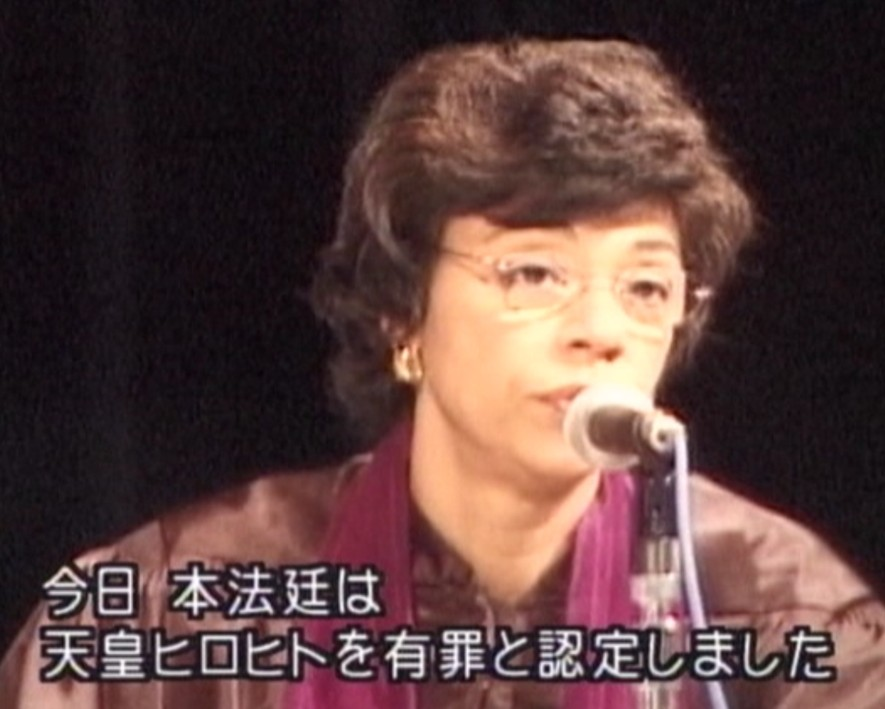

「慰安婦」にされた女性たちと
痛みを共にし、
女性への暴力のない二十一世紀を
迎えましょう
私が「慰安婦」のことを知ったのは一九七〇年代に韓国へのセックス・ツアー反対キャンペーンをしていたときでした。 韓国の女性たちから「日本の男性たちは戦争のときに同胞の女性たちを武力で狩り出し、それを反省もしないで、今は経済力で女性たちの性をもてあそびに来ている」といわれたからです。 当時すでに「慰安婦」についての本は出ていましたので、それを読んでショックを受けました。 何かしなければと思いましたが、そのころ被害女性たちがだれも名乗り出ていなくて、何もできなかったのです。
九〇年代になって初めて韓国の元「慰安婦」金学順(クムハクスン)さんが長い沈黙を破りました。 日本政府があれは民間の業者がやったことだと国の責任を否定したのに憤慨したからです。 韓国の女性運動が強くなって被害者を支える態勢になっていたこともあります。 そのあと、フィリピン、台湾、北朝鮮、中国、インドネシアなどでも被害女性たちが次々に声をあげました。
朝日新聞記者だった私は各国の「慰安婦」に何人も会いました。 五〇年も昔の体験ですから記憶はそんなにはっきりしていなくても、最初に日本兵に強かんされたときのことはとてもよく覚えていました。 抵抗して受けた傷が今も体に残っている女性もずいぶんいました。 また、フィリピンの女性たちなどは慰安所ではなく兵舎に監禁されて毎日何人もの兵隊にレイプされ、米軍が近づいてきて部隊が移動しなければならなくなると、厄介者だと「処分」、つまり殺されたのです。 生き残った女性は大きな刀傷が残っていました。
昨年、東京地裁に裁判を起こした台湾の原住民族の被害女性たちを訪ねましたが、近くに日本軍が駐屯すると、当時、村を支配していた日本の警察官からいわれて部隊に働きに行き、しばらくすると毎夜、近くの洞穴やトンネルに連れて行かれて、真っ暗な中で何人もの兵隊に犯されたのです。 避妊具もなく、妊娠、流産、中絶など体もめちゃめちゃにされ、そのうえ若妻だった女性たちは夫が日本軍にとられて戦地に送られて戦死したのです。 中には、戦後妊娠させられていたことを知らずに村へもどって結婚したものの、夫がそれを責めたて暴力がひどくて離婚を繰り返した女性もいました。
「慰安婦」だった女性たちが日本政府に求め続けているのは、真相を明らかにすること、被害女性たちに国家として謝罪と補償をすること、加害者を処罰することなどですが、日本政府は法的な責任を一切認めず、、補償を求める裁判を各国の被害女性たちが八つ起こしていますが、判決は彼女たちの訴えを拒んでいるのです。 しかも、日本の右翼が「慰安婦」は金を稼ぐための売春婦だった、強制連行の証拠はない、などと被害女性たちを侮辱し続け、教科書から「慰安婦」問題を除くようにキャンペーンをしてきました。 それで、ほとんどの教科書から削られることになりました。
一方、被害女性たちは高齢で相次いで亡くなります。 その悲報を聞くたびに彼女たちが何の償いも正義の回復もされずに苦しみの人生を閉じなければならなかったことに、日本の女性として本当に申し訳なく思います。 死を前にして彼女たちはあまりにもつらかった自分の人生と、反省もせず処罰もされずに平穏に暮らす加害男性の人生とのあまりの対照に怒りを感じるのでしょう。 韓国の「慰安婦」の中で精神的なリーダーのような存在だったカン徳景(ドッキョン)さんは「慰安婦」時代のことをすばらしい絵に描きました。 そして、亡くなる前に遺言だと描き遣したのは「責任者の処罰を」という強烈な絵でした。
その絵を見たときに、一体この叫びにどう応えたらよいのかと考え込みました。 「慰安婦」を支援する運動が始まって一〇年近くたちますが、調査と補償の問題には取り組んできました。 しかし処罰については避けてきました。 日本は戦犯を一人も裁かなかった国です。 ドイツが六千人の戦犯を処罰したのとあまりにも対照的です。
そのうえ戦争犯罪の中でも「慰安婦」制度のような戦時性暴力は被害者が沈黙を強いられたこともあって、世界の他の地域でも不処罰だったのです。 しかし、九十年代になって「慰安婦」が名乗りをあげ、また、旧ユーゴやルワンダでのすさまじい強かんが世界にショックを与えたことなどから、加害者は処罰すべきだという国際的な世論が盛りあがったのです。 それで、国連が旧ユーゴとルワンダの国際戦犯法廷を開き、性暴力が初めて裁かれ、集団強かんの責任者が終身刑判決さえ受けるようになったのです。 そして、戦争犯罪や人道への罪を裁くための国際刑事裁判所を作ることが九八年に各国政府によって合意され、その規程の中に、女性に対する戦争犯罪や人道への罪は何かがはっきりと書かれたのです。
しかし、この裁判所ができても過去の戦争犯罪は裁かないので、「慰安婦」問題での責任者処罰はできません。 日本の裁判所にも、これまでの判決を見れば期待できません。 それなら、民間の女性たちで裁判をやろうとr「女性国際戦犯法廷」を、「戦争と女性への暴力」日本ネットワーク(VAWWーNET Japan 松井やより 代表)が二〇〇〇年一二月に東京で開くことを提案したのです。 韓国、北朝鮮、中国、台湾、フィリピン、インドネシアの六被害国が参加し、女性の人権や戦時性暴力の問題に取り組んでいる世界の女性たちの協力で、準備活動をしてきました。
目的は二つあります。「慰安婦」制度がどのような犯罪であったか、だれに責任があったか、国家はどのような責任があったかをはっきりさせて、日本政府に責任をとるように迫ることです。 もう一つは、戦時性暴力の不処罰をやめて世界のどこでもそのようなことが起こらないようにするという世界中の女性の人権の問題です。
各国が検事団を選んで起訴状を書き、それを三人の主席検事(一人は旧ユーゴ戦犯法廷の法律顧問の女性です)がまとめ、被害者と専門家が証言し、五人の裁判官が判決を出すことになっています。 それを実行する権限はないけれと、道義的権威によって出された判決を国際社会が受け入れるように、そしてどのような犯罪だったかを明らかにして歴史に残そうと いうわけです。
「女性国際戦犯法廷」は一二月八日〜一二日東京で開きますが、海外から四〇〇人、国内から六〇〇人が傍聴します。 やはり被害者中心にということで、証言者だけでなく、六ヵ国から全部で五〇人ぐらいの「慰安婦」を招きたいと募金に努力しています。 これだけ多くの被害女性が一堂に会するのはおそらく最初で最後の機会だと思います。 彼女たちが国際社会から正義を得ることで、そして他の国の被害者と交流することで、少しでも力づけられ、心が癒されることを願っています。 そのための費用を集めるのに苦労していますが、とくに、一〇人以上の被害女性を山奥の村や離れた島から連れてくる中国を応援する必要があります。
ということで、ぜひ「法廷」を傍聴していただきたいのと、被害女性の参加費用の募金にご協力を心よりお願いしたいと思います。
ご連絡はVAWWーNET Japan (Fax ０３ー５３３７ー４０８８) へ。
女性国際戦犯法廷2000年12月、天皇ヒロヒトの有罪判決に会場は沸き立った―。
民衆法廷として「女性国際戦犯法廷」が東京で開かれ、日本軍性奴隷制度の責任者として天皇裕仁を含む10名の日本軍高官に有罪判決が下されました。 法廷には、元慰安婦たち約60名を含むアジア諸国からの多数の参加者と、のべ5000名の傍聴者が参加した。

■そもそも天皇裕仁は陸海軍の大元帥であり、自身の配下にある者が国際法に従って性暴力をはたらくことをやめさせる責任と権力を持っていた
■天皇裕仁は自分の軍隊が『南京大虐殺』中に強かんなどの性暴力を含む残虐行為を犯していることを認識していた
■強かんを防ぐため必要な、実質的な制裁、捜査や処分などあらゆる手段をとるのではなく、むしろ『慰安所』制度の継続的拡大を通じて強かんと性奴隷制を永続させ隠匿する膨大な努力を、故意に承認し、または少なくとも不注意に許可した
「女性国際戦犯法廷」を取材したNHKの報道番組が、放送直前に安倍晋三氏ら政治家の圧力を受けて改変された事件があった。 暴かれた真実 / NHK番組改ざん事件
日本軍の従軍慰安婦問題中曽根 元首相が戦時中、海軍主計士官（将校）の地位にあったことは有名だが、その当時、自ら慰安所の設置に積極的に関わり、慰安婦の調達までしていたことを、戦後に自分の“手記”の中で自ら書いている。 これは中曽根 元首相の思い違いでも妄想でもない。防衛省にも中曽根 元首相の“慰安所づくり”証言を裏付ける戦時資料が存在している。
当時、インドネシアの設営部隊三千人の総指揮官だった中曽根は、後に慰安婦が問題になるとはまったく想像しておらず、自慢話として得々と「苦心して慰安所をつくってやった」と書いていた。
実際、インドネシアでは年端も行かない女性達が日本兵の引率のもと連れ去られ、いきなり慰安所で複数の日本兵に犯されたという悲惨な体験が語られている。リンク先: リテラ（2019.11.29）中曽根の「慰安所つくった」証言と「土人女を集め慰安所開設」防衛省文書
「慰安婦」たちの「ナヌムの家」韓国の「ナヌムの家」に元「慰安婦」ハルモニ(おばあさん)たちが、肩を寄せ合って暮らしていた。
第一部 分かち合いの家
「ナヌム（分かち合い）の家」で暮らすハルモニたち。 過去を忘れるための酒が手放せず荒む女性、息子に過去を知られ悩み苦んだ女性、戦後、結婚もできず孤独に生きてきた女性……。第二部 姜徳景
最年少の姜徳景（カン・ドクキョン）は、「女子挺身隊」として日本に渡るが、脱走したことで「慰安婦」にされる。 その体験と心情を姜徳景は絵で表現した。
金順徳（キム・スンドク）は、テレビで日本政府要人の「『従軍慰安婦』たちは金が目的で戦地へ行った」という主張を知り、怒りがこみ上げ、過去を公にした。 しかし子供たちに過去を知られる恐怖、衝撃を与えた自責に長年悩み苦しんだ。引用: 土井敏邦 監督 ドキュメンタリー "記憶"と生きる
大月書店（2015/04発売） 『“記憶”と生きる』 元「慰安婦」姜徳景の生涯（土井監督 著）
{kind=link}
{kind=link}
{kind=link}
{kind=link}